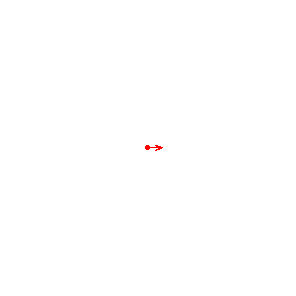

CLEARSCREEN <- function () {
rm(list = ls(envir = LOGO), envir = LOGO)
new_field(5)
}Logo with Gimmicks
Logo
Goal: Programming a simple language with R
Logo goes back much earlier than the Apple II, it was developed in 1967 by Cynthia Solomon, Wally Feurzig, and Seymour Papert. That’s five years before C and 24 years before Python! The three worked at Bolt, Beranek, and Newman (BBN), famous for all kinds of other computing history. BBN built the first Interface Message Processors (early routers) in 1968 for the ARPANET, which would evolve into the modern internet. …learn more
Basic Commands
Implementing the basic commands see “Hello Turtle”
CLEARSCREEN (CS)
Clear the screen and initializing the field
CS <- function () {
CLEARSCREEN()
}HIDETURTLE (HT)
Don’t show the turtle cursor.
HIDETURTLE <- function () {
LOGO$data$turtle <- FALSE
record_path(turtle = LOGO$data$turtle)
}HT <- function () {
HIDETURTLE()
}SHOWTURTLE (ST)
Show the turtle cursor.
SHOWTURTLE <- function () {
LOGO$data$turtle <- TRUE
record_path(turtle = LOGO$data$turtle)
}ST <- function () {
SHOWTURTLE()
}FORWARD (FD)
Move forward steps.
FORWARD <- function (step) {
angle <- LOGO$data$path$rad[LOGO$data$pos]
x0 <- LOGO$data$path$x[LOGO$data$pos]
y0 <- LOGO$data$path$y[LOGO$data$pos]
max_step <- 1
n_step <- abs(step)%/%(max_step * 1.5) + 1
Seq0 <- seq(from = 0, to = 1, by = 1/n_step)
Seq0 <- Seq0[-1]
steps <- qbeta(Seq0, shape1 = 0.15, shape2 = 0.2)
steps <- steps * step
x1 <- x0 + cos(angle) * steps
y1 <- y0 + sin(angle) * steps
record_path(x = x1, y = y1, path_color = LOGO$data$path_color)
}FD <- function (step) {
FORWARD(step)
}BACK (BK)
Move back steps.
BACK <- function (steps) {
FORWARD(-steps)
}BK <- function (steps) {
BACK(steps)
}LEFT (LT)
Turn left this many degrees. Negative degrees work too, they’ll turn it right.
LEFT <- function (degs) {
LOGO$data$heading <- LOGO$data$heading + degs
LOGO$data$heading <- LOGO$data$heading %% 360
record_path(rad = LOGO$data$heading * pi / 180)
}LT <- function (degs) {
LEFT(degs)
}RIGHT (RT)
Turn right this many degrees.
RIGHT <- function (degs) {
LEFT(-degs)
}RT <- function (degs) {
RIGHT(degs)
}SETHEADING (SH)
Turn to an absolute heading of degrees.
SETHEADING <- function (deg) {
LOGO$data$heading <- deg
record_path(rad = LOGO$data$heading * pi / 180)
}SH <- function (deg) {
SETHEADING(deg)
}SETPOS (SP)
Set the position to x, y coordinates. These are Cartesian, so 0,0 is the middle of the screen.
SETPOS <- function (x1, y1) {
record_path(x = x1, y = y1, path_color = "transparent")
}SP <- function (x1, y1) {
SETPOS(x1, y1)
}HOME
Move back to the home position.
HOME <- function () {
SETPOS(x1 = 0, y1 = 0)
}SETPOSX (SPX)
Set the horizontal position to x.
SETPOSX <- function (x1) {
SETPOS(x1, y1 = LOGO$data$path$y[LOGO$data$pos])
}SPX <- function (x1) {
SETPOSX(x1)
}SETPOSY (SPY)
Set the vertical position to y.
SETPOSY <- function (y1) {
SETPOS(x1 = LOGO$data$path$x[LOGO$data$pos], y1)
}SPY <- function (y1) {
SETPOSY(y1)
}Gimmicks
SETPATHCOLOR (SPC)
SETPATHCOLOR <- function (path_color) {
LOGO$data$path_color <- path_color
record_path(path_color = LOGO$data$path_color)
}SPC <- function (path_color) {
SETPATHCOLOR(path_color)
}SETTURTLECOLOR (STC)
SETTURTLECOLOR <- function (turtle_color) {
LOGO$data$turtle_color <- turtle_color
record_path(turtle_color = LOGO$data$turtle_color)
}STC <- function (turtle_color) {
SETTURTLECOLOR(turtle_color)
}SETNEWCHUNK (SNC)
SETNEWCHUNK <- function () {
LOGO$data$chunk <- LOGO$data$chunk + 1
record_path(chunk = LOGO$data$chunk)
}SNC <- function () {
SETNEWCHUNK()
}UNDOCHUNK (UNDO)
UNDOCHUNK <- function () {
last_chunk <- max(LOGO$data$path$chunk)
if (last_chunk > 1) {
LOGO$data$path <- LOGO$data$path[LOGO$data$path$chunk != last_chunk,]
} else {
CLEARSCREEN()
}
LOGO$data$chunk <- max(LOGO$data$path$chunk)
LOGO$data$pos <- nrow(LOGO$data$path)
LOGO$data$heading <- LOGO$data$path$rad[LOGO$data$pos] * 180 / pi
LOGO$data$turtle <- LOGO$data$path$turtle[LOGO$data$pos]
LOGO$data$turtle_color <- LOGO$data$path$turtle_color[LOGO$data$pos]
last_pos <- LOGO$data$pos
while (LOGO$data$path$path_color[last_pos] == "transparent" && last_pos > 0) {
last_pos <- last_pos - 1
}
if (last_pos == 0) {
LOGO$data$path_color <- "blue"
} else {
LOGO$data$path_color <- LOGO$data$path$path_color[last_pos]
}
REPLOT()
}UNDO <- function () {
UNDOCHUNK()
}SETSPEED (SPEED)
SETSPEED <- function (speed) {
speed <- pmax(speed, 1)
speed <- round(speed)
LOGO$data$speed <- speed
}SPEED <- function (speed) {
SETSPEED(speed)
}REPLOT
REPLOT <- function (chunk = FALSE) {
PLOT(chunk)
}SAVEPATH (SAVE)
SAVESCREEN <- function (name) {
name_gif <- paste0(name, ".gif")
REPLOT()
file.copy(from = file.path(tempdir(), "Logo_Output.gif"),
to = here("LOGO", name_gif),
overwrite = TRUE)
}SAVE <- function (name) {
SAVESCREEN(name)
}QUITLOGO (QUIT)
QUITLOGO <- function () {
if (exists("LOGO", envir = .GlobalEnv)) {
rm(LOGO, envir = .GlobalEnv)
}
}QUIT <- function () {
QUITLOGO()
}Parsing Prompts
Clean strings
clean_prompt <- function (Prompt) {
Prompt <- gsub("([^a-zA-Z0-9])", " \\1 ", Prompt)
Prompt <- gsub("\\s+", " ", Prompt)
Prompt <- gsub("-\\s+(?=\\d)", "-", Prompt, perl = TRUE)
Prompt <- gsub("\\s*\\.\\s*", ".", Prompt)
Prompt <- gsub("\\s*_\\s*", "_", Prompt)
Prompt <- trimws(Prompt)
Prompt
}Analyzing and splitting Code
breakup_String <- function(String) {
cl_String <- clean_prompt(String)
split_String <- strsplit(cl_String, " ")[[1]]
df <- data.frame(Code = split_String)
n_func <- 0
df$ID_Func <- rep(0, nrow(df))
n_par <- 0
df$ID_Par <- rep(0, nrow(df))
ID <- 1
df$ID_Repeat <- rep(0, nrow(df))
brakets <- data.frame(ID = ID,
Status = TRUE,
n = 1)
level <- brakets$ID[max(which(brakets$Status == TRUE))]
df$n_Repeat <- rep(1, nrow(df))
is_par_braket <- FALSE
i <- 1
imax <- nrow(df) + 1
while ( i < imax ) {
if (df$Code[i] == "[") {
n_par <- n_par + 1
is_par_braket <- TRUE
i <- i + 1
next
}
if (is_par_braket) {
if (df$Code[i] == "]") {
is_par_braket <- FALSE
i <- i + 1
next
}
if ( !grepl("[A-Za-z]", df$Code[i])) {
df$ID_Func[i] <- n_func
df$ID_Par[i] <- n_par
df$ID_Repeat[i] <- brakets$ID[brakets$ID == level]
df$n_Repeat[i] <- brakets$n[brakets$ID == level]
i <- i + 1
next
} else {
inLower <- tolower(df$Code[i])
if (inLower == "n") {
df$Code[i] <- paste0("(",inLower,")")
} else if (inLower %in% colors()) {
df$Code[i] <- paste0("'",inLower,"'")
} else if (exists(inLower)) {
df$Code[i] <- inLower
} else {
df$Code[i] <- paste0("'",df$Code[i],"'")
}
df$ID_Func[i] <- n_func
df$ID_Par[i] <- n_par
df$ID_Repeat[i] <- brakets$ID[brakets$ID == level]
df$n_Repeat[i] <- brakets$n[brakets$ID == level]
i <- i + 1
next
}
} else {
if (df$Code[i] == "]") {
brakets$Status[brakets$ID == level] <- FALSE
level <- brakets$ID[max(which(brakets$Status == TRUE))]
i <- i + 1
next
}
if ( !grepl("[A-Za-z]", df$Code[i]) ) {
n_par <- n_par + 1
df$ID_Func[i] <- n_func
df$ID_Par[i] <- n_par
df$ID_Repeat[i] <- brakets$ID[brakets$ID == level]
df$n_Repeat[i] <- brakets$n[brakets$ID == level]
i <- i + 1
next
} else {
inCaps <- toupper(df$Code[i])
is_LOGO_func <- exists(inCaps) && is.function(get(inCaps))
if (is_LOGO_func) {
n_func <- n_func + 1
df$Code[i] <- inCaps
}
is_repeat <- inCaps == "REPEAT"
if (is_repeat) {
n_func <- n_func + 1
ID <- ID + 1
i = i + 2
df$Code[i] <- inCaps
brakets <- rbind(brakets,
data.frame(ID = ID,
Status = TRUE,
n = round(as.numeric(df$Code[i - 1]))))
level <- brakets$ID[max(which(brakets$Status == TRUE))]
}
df$ID_Func[i] <- n_func
df$ID_Repeat[i] <- brakets$ID[brakets$ID == level]
df$n_Repeat[i] <- brakets$n[brakets$ID == level]
i <- i + 1
next
}
}
}
return(df[df$ID_Func != 0,])
}CodeLine <- "CS repeat 2 [fd [-pi/n]] sPc [black]"
cl_splited <-breakup_String(CodeLine)
cl_splited Code ID_Func ID_Par ID_Repeat n_Repeat
1 CS 1 0 1 1
4 REPEAT 2 0 2 2
5 FD 3 0 2 2
7 - 3 1 2 2
8 pi 3 1 2 2
9 / 3 1 2 2
10 (n) 3 1 2 2
13 SPC 4 0 1 1
15 'black' 4 2 1 1Create Calls
create_Calls <- function (splited) {
Calls <- splited %>%
group_by(ID_Func, ID_Par) %>%
mutate(Func_Par = ifelse(ID_Par > 0,1,0),
Code = ifelse(first(ID_Par) > 0,
paste0(Code, collapse = ""),
Code)) %>%
ungroup() %>%
distinct(Code, ID_Func, ID_Par, Func_Par, .keep_all = TRUE) %>%
group_by(ID_Func, Func_Par) %>%
mutate(Code = ifelse(first(Func_Par) > 0,
paste0(Code, collapse = ", "),
Code)) %>%
ungroup() %>%
distinct(Code, ID_Func, Func_Par, .keep_all = TRUE) %>%
group_by(ID_Func) %>%
mutate(Code = ifelse(n() > 1,
paste0(Code, collapse = "("),
paste0(Code, "(")),
Code = paste0(Code, ")")) %>%
ungroup() %>%
distinct(Code, ID_Func, .keep_all = TRUE) %>%
rename(Call = Code, ID = ID_Repeat, n = n_Repeat ) %>%
select(Call,ID, n)
if ( !any(grepl("^UN|SPEED|SAVE|QUIT", Calls$Call)) ) {
first_call <- data.frame(Call = "SETNEWCHUNK()", ID = 1, n = 1)
last_call <- data.frame(Call = "PLOT()", ID = 1, n = 1)
Calls <- rbind(first_call, Calls, last_call)
}
Calls
}Callshort <- create_Calls(cl_splited)
Callshort Call ID n
1 SETNEWCHUNK() 1 1
2 CS() 1 1
3 REPEAT() 2 2
4 FD(-pi/(n)) 2 2
5 SPC('black') 1 1
6 PLOT() 1 1Expand Repeats
expand_Repeats <- function (Calls) {
IDmax <- max(Calls$ID)
if (IDmax == 1) {
return(as.vector(Calls$Call))
}
while (IDmax > 1){
dfm <- data.frame(
Call = character(),
ID = integer(),
n = integer(),
stringsAsFactors = FALSE
)
rID <- range(which(Calls$ID == IDmax))
n <- Calls$n[rID[1]]
middle <- (rID[1] + 1):rID[2]
for (i in 1:n) {
dfm_sub <- Calls[middle, ] %>%
mutate(Call = gsub("\\(n\\)", i, Call))
dfm <- rbind(dfm,dfm_sub)
}
dfm$ID <- Calls$ID[rID[1]-1]
dfm$n <- Calls$n[rID[1]-1]
before <- 1:(rID[1] - 1)
dfb <- Calls[before, ]
after <- (rID[2] + 1):nrow(Calls)
dfa <- Calls[after, ]
Calls <- rbind(dfb,dfm,dfa)
IDmax <- max(Calls$ID)
}
return(as.vector(Calls$Call[Calls$Call != ""]))
}Calls <- expand_Repeats(Callshort)
Calls[1] "SETNEWCHUNK()" "CS()" "FD(-pi/1)" "FD(-pi/2)"
[5] "SPC('black')" "PLOT()" Run Calls
run_prompt <- function (Prompt) {
Prompt_splited <- breakup_String(Prompt)
Callshort <- create_Calls(Prompt_splited)
Calls <- expand_Repeats(Callshort)
for (i in 1:length(Calls)){
eval(parse(text = as.character(Calls[i])))
}
}Helper Functions
New field
Initializing the game
new_field <- function (size) {
dir_path <- here("LOGO", "temp")
chunk <- 1
pos <- 2
heading <- 0
turtle <- TRUE
turtle_color <- "red"
path_color <- "blue"
speed <- 50
path <- data.frame(
chunk = rep(1, pos),
x = rep(0, pos),
y = rep(0, pos),
rad = rep(0, pos),
path_color = rep("transparent", pos),
turtle = c(FALSE, rep(turtle, pos - 1)),
turtle_color = rep(turtle_color, pos),
stringsAsFactors = FALSE
)
LOGO$data <- list(
field_name = "LOGO",
field_dir = here(),
size = abs(size),
chunk = chunk,
pos = pos,
heading = heading,
turtle = turtle,
turtle_color = turtle_color,
path_color = path_color,
speed = speed,
path = path
)
}Record Path
record_path <- function (chunk = NULL,
x = NULL,
y = NULL,
rad = NULL,
path_color = NULL,
turtle = NULL,
turtle_color = NULL) {
temp <- LOGO$data$pos
n <- max(lengths(list(chunk, x, y, rad, path_color, turtle, turtle_color)))
template <- LOGO$data$path[temp, ]
newrows <- template[rep(1, n), ]
if (!is.null(chunk)) newrows$chunk <- chunk
if (!is.null(x)) newrows$x <- x
if (!is.null(y)) newrows$y <- y
if (!is.null(rad)) newrows$rad <- rad
if (!is.null(path_color)) newrows$path_color <- path_color
if (!is.null(turtle)) newrows$turtle <- turtle
if (!is.null(turtle_color)) newrows$turtle_color <- turtle_color
LOGO$data$path <- rbind(LOGO$data$path, newrows)
rownames(LOGO$data$path) <- NULL
LOGO$data$pos <- nrow(LOGO$data$path)
}Plot Functions
Field
plot_field <- function (stat) {
maxpath <- ceiling(max(abs(LOGO$data$path[1:stat,c("x","y")])) * 1.11)
LOGO$data$size <- max(c(LOGO$data$size, maxpath), na.rm = TRUE)
par(mar = c(0, 0, 0, 0),
xaxs = "i", yaxs = "i")
plot.new()
plot.window(xlim = c(-LOGO$data$size, LOGO$data$size),
ylim = c(-LOGO$data$size, LOGO$data$size),
asp = 1)
box()
}Path
plot_path <- function (stat) {
if (stat > 1) {
for (i in 2:stat) {
segments(x0 = LOGO$data$path$x[i-1], y0 = LOGO$data$path$y[i-1],
x1 = LOGO$data$path$x[i], y1 = LOGO$data$path$y[i],
col = LOGO$data$path$path_color[i], lwd = 2)
}
}
}Turtle
plot_turtle <- function (stat) {
show <- LOGO$data$path$turtle[stat]
if (show) {
symbols(x = LOGO$data$path$x[stat],
y = LOGO$data$path$y[stat],
circles = 0.02 * LOGO$data$size,
inches = FALSE,
fg = NA,
bg = LOGO$data$path$turtle_color[stat],
add = TRUE)
arrow_length <- 0.1 * LOGO$data$size
angle <- LOGO$data$path$rad[stat]
arrows(LOGO$data$path$x[stat],
LOGO$data$path$y[stat],
LOGO$data$path$x[stat] + cos(angle) * arrow_length,
LOGO$data$path$y[stat] + sin(angle) * arrow_length,
col = LOGO$data$path$turtle_color[stat],
code = 2,
length = 0.1,
angle = 20,
lwd = 2)
}
}Stat
plot_stat <- function (stat = NULL) {
if(is.null(stat)) stat <- nrow(LOGO$data$path)
tmpfile <- tempfile(fileext = ".png")
png(filename = tmpfile, width = 600, height = 600, res = 150)
plot_field(stat)
plot_path(stat)
plot_turtle(stat)
dev.off()
img <- image_read(tmpfile)
unlink(tmpfile)
img
}PLOT (Animation)
PLOT <- function (chunk = TRUE) {
invisible(NULL)
if (chunk) {
Range <- range(which(LOGO$data$path$chunk == max(LOGO$data$chunk)))
rmin <- max(2,Range[1])
rmax <- Range[2]
} else {
rmin <- 2
rmax <- nrow(LOGO$data$path)
}
step <- LOGO$data$speed/(rmax-rmin)
step <- pmin(pmax(step, 1/200), 1)
Seq0 <- seq(from = 0, to = 1, by = step)
plot_seq <- qbeta(Seq0, shape1 = 0.15, shape2 = 0.2)
plot_seq <- (rmax - rmin) * plot_seq + rmin
plot_seq <- round(plot_seq)
plot_seq <- unique(plot_seq)
img_list <- lapply(plot_seq, function(i) plot_stat(i))
Logo_Output <- image_animate(image_join(img_list),
fps = 10, loop = 1,
optimize = TRUE)
gif_path <- file.path(tempdir(), "Logo_Output.gif")
image_write(Logo_Output, path = gif_path)
print(Logo_Output)
}Application
run_LOGO <- function(string) {
if (!exists("LOGO", envir = .GlobalEnv)) {
assign("LOGO", new.env(), envir = .GlobalEnv)
LOGO <- get("LOGO", envir = .GlobalEnv)
new_field(5)
} else {
LOGO <- get("LOGO", envir = .GlobalEnv)
}
run_prompt(string)
}Run Game
Example from the homepage
with some fancy shadow and color effects
run_LOGO("CS SP [-pi/5] [-Sin(PI/2)/2] sPc [black]")
run_LOGO("REPEAT 20 [RepeaT 180 [FD 1 RT 2] RT 18]")
run_LOGO("SPEED 100")
run_LOGO("Home SpC [gREEN] StC [blue]")
run_LOGO("REPEaT 20.1 [rEPEAT 180 [fD 1 RT 2] RT 18]")
run_LOGO("UndoChunk")
run_LOGO("SpC [blue] StC [green]")
run_LOGO("REPEaT 5 [rEPEAT 180 [fD 1 RT 2] RT 72]")
run_LOGO("SpC [green] StC [red] rt 18")
run_LOGO("REPEaT 5 [rEPEAT 180 [fD 1 RT 2] RT 72]")
run_LOGO("SpC [yellow] rt 18")
run_LOGO("REPEaT 5 [rEPEAT 180 [fD 1 RT 2] RT 72]")
run_LOGO("SpC [red] rt 18 ht")
run_LOGO("REPEaT 5 [rEPEAT 360 [fD 0.5 RT 1] RT 72]")Saved Output
you can also save the output (Plot) for showing it around later
run_LOGO("SPEED 1 saVe [Logo01]")
Other Exercises
Since n is also used as a loop variable in my program, handling many other exercises doesn’t pose any issues.
https://softwareprogramming4kids.com/loops-in-logo/
Exercise 1:
run_LOGO("CS")
run_LOGO("REPEAT 80 [FD [N*2] RT 90]")
run_LOGO("undo")
run_LOGO("REPEAT 80 [FD [N*2^(N/40)] RT 90]")Saved Output
run_LOGO("SPEED 1 saVe [Logo02]")Exercise 2:
run_LOGO("CS REPEAT 50 [ FD [n * 5] RIGHT 144 ]")Saved Output
run_LOGO("SPEED 1 saVe [Logo03]")Exercise 3:
run_LOGO("CS REPEAT 150 [ FD [n * 2] RT 91 ]")Saved Output
run_LOGO("SPEED 1 saVe [Logo04]")Quit LOGO
run_LOGO("QUIT")